概述
现在很多newsql都支持了mysql协议，例如tidb底层是kv存储，实现了对mysql协议的支持。他们都可以实现对sql语句的解析，并完成相应的数据操作，这个是如何做到的呢？
解析流程
概述
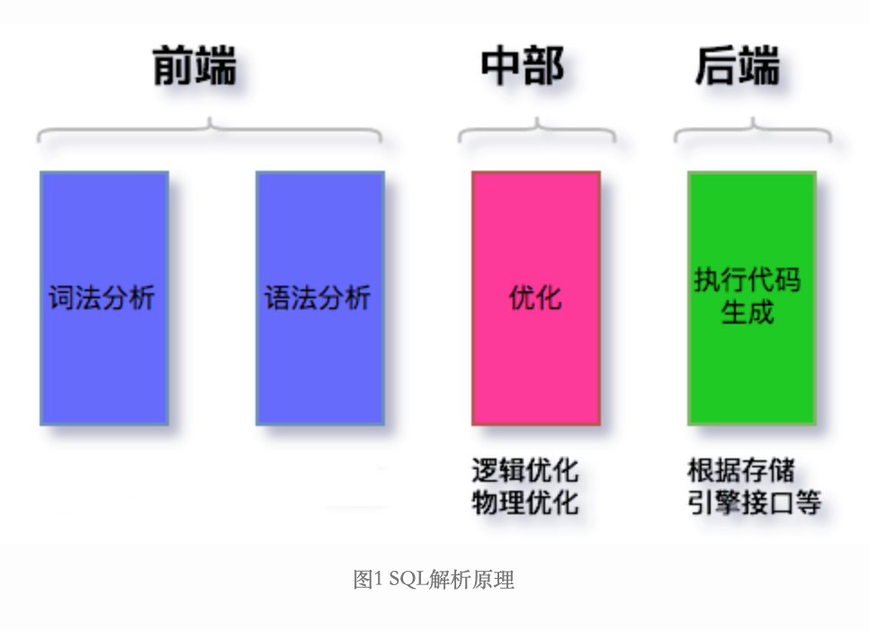{width=”5.768055555555556in” height=”4.191666666666666in”}
Sql的解析、优化、执行和编译器的工作原理是相同的，和c、golang这种语言解析上处理上都是类似的。
大致分为前、中、后端，前端处理将语句进行解析，中部根据语言特性进行对应的优化，后端根据存储的不同进行不同的处理。
下图为语言编译器的编译过程：
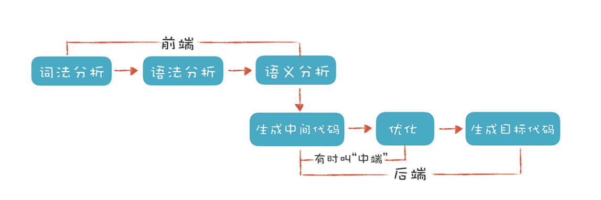{width=”5.768055555555556in” height=”1.9229166666666666in”}
词法分析
词法分析（Lexical Analysis）。通常，编译器的第一项工作叫做词法分析。就像阅读文章一样，文章是由一个个的中文单词组成的。程序处理也一样，将字符串解析成 Token。
我们会识别出 if、else、int 这样的关键字，main、printf、age 这样的标识符，+、-、= 这样的操作符号，还有花括号、圆括号、分号这样的符号，以及数字字面量、字符串字面量等。这些都是 Token。
通常词法分析可以使用有限状态自动机来完成。
例如解析age = 45为标识符、比较操作符和数字字面量这三种 Token 的词法规则:
-
标识符（ID）：第一个字符必须是字母，后面的字符可以是字母或数字。
-
比较操作符：\ 和 =（其他比较操作符暂时忽略）。
-
数字字面量：全部由数字构成。
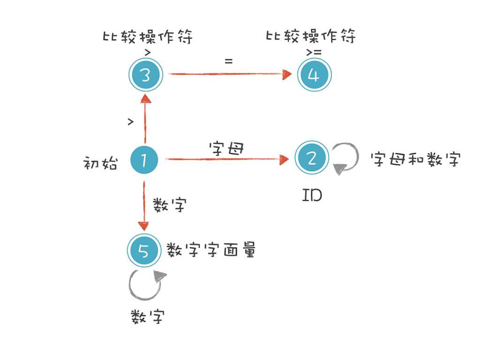{width=”4.094339457567804in” height=”2.8452351268591425in”}
-
初始状态：刚开始启动词法分析的时候，程序所处的状态。
-
标识符状态：在初始状态时，当第一个字符是字母的时候，迁移到状态 2。当后续字符是字母和数字时，保留在状态 2。如果不是，就离开状态 2，写下该 Token，回到初始状态。
-
大于操作符（GT）：在初始状态时，当第一个字符是
时，进入这个状态。它是比较操作符的一种情况。 -
大于等于操作符（GE）：如果状态 3 的下一个字符是 =，就进入状态 4，变成 =。它也是比较操作符的一种情况。
-
数字字面量：在初始状态时，下一个字符是数字，进入这个状态。如果后续仍是数字，就保持在状态 5。
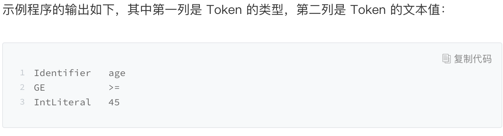{width=”5.768055555555556in” height=”1.56875in”}
上面的例子虽然简单，但其实已经讲清楚了词法原理，就是依据构造好的有限自动机，在不同的状态中迁移，从而解析出 Token 来。你只要再扩展这个有限自动机，增加里面的状态和迁移路线，就可以逐步实现一个完整的词法分析器了。
相关代码如下：
https://github.com/RichardGong/PlayWithCompiler/blob/master/lab/craft/SimpleLexer.java
有限状态自动机
有限状态自动机（FSM "finite state machine" 或者FSA "finite state automaton" ）是为研究有限内存的计算过程和某些语言类而抽象出的一种计算模型。有限状态自动机拥有有限数量的状态，每个状态可以迁移到零个或多个状态，输入字串决定执行哪个状态的迁移。有限状态自动机可以表示为一个有向图。
语法分析
词法分析是识别一个个的单词，而语法分析（syntactic analysis，也叫 parsing）就是在词法分析的基础上识别出程序的语法结构。这个结构是一个树状结构，是计算机容易理解和执行的，这个树被称为抽象语法树（Abstract Syntax Tree，AST）。
例如”2+3*5”可以被抽象为下面的一棵树。形成 AST 以后有什么好处呢？就是计算机很容易去处理。比如，针对表达式形成的这棵树，从根节点遍历整棵树就可以获得表达式的值。
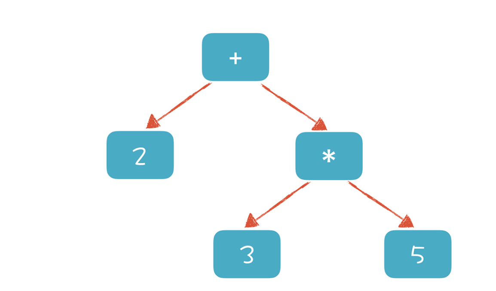{width=”3.7421380139982503in” height=”2.198607830271216in”}
要构建抽象语法树，语言处理器首先要知道将会接受哪些单词序列，也就是要处理怎样的程序，并确定希望构造出怎样的抽象语法树。通常这些设定由程序设计语言的语法（Grammer）决定。
语法规定了单词的组合规则，例如双目运算表达式应该由哪些单词组成、if语句应该有怎样的结构等。这种语法可以通过BNF（巴科斯范式）用来表达。
我们可以通过BNF定义SQL或者自定义脚本语言的语法，通过ANTLR工具来解析SQL或者解析自定义的脚本语句，并完成相应的执行代码。
巴科斯范式
巴科斯范式（英语：Backus Normal Form，缩写为 BNF），又称为巴科斯-诺尔范式（英语：Backus-Naur Form，缩写同样为 BNF，也译为巴科斯-瑙尔范式、巴克斯-诺尔范式），是一种用于表示上下文无关文法的语言，上下文无关文法描述了一类形式语言。
广泛地使用于程序设计语言、指令集、通信协议的语法表示中。大多数程序设计语言或者形式语义方面的教科书都采用巴科斯范式。在各种文献中还存在巴科斯范式的一些变体，如扩展巴科斯范式 EBNF 或扩充巴科斯范式 ABNF。
铁轨图
由于BNF并不能很直观得表达语法规则，所以人们有时候会用铁路图来表示grammer。
例如下面是And条件分支，可以选择一个、追加一个and或者无限and下去。
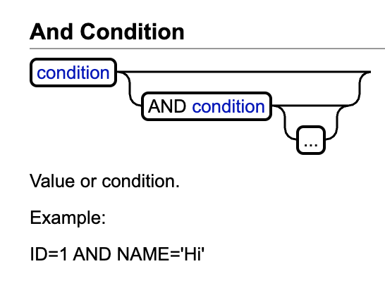{width=”3.791861329833771in” height=”2.791809930008749in”}
http://www.h2database.com/html/grammar.html
ANTLR
ANTLR（全名：ANother Tool for Language Recognition）是基于LL(*)算法实现的语法解析器生成器（parser generator），用Java语言编写，如同一般的词法分析器（lexer）和语法分析器（parser），ANTLR可以用来产生树状分析器（tree parsers）。ANTLR 文法定义使用类似EBNF（Extended Backus-Naur Form）的定义方式，形象十分简洁直观。
ANTRL官方提供了很多grammer，包括mysql协议、java等。
https://github.com/antlr/grammars-v4
IDEA ANTLR插件
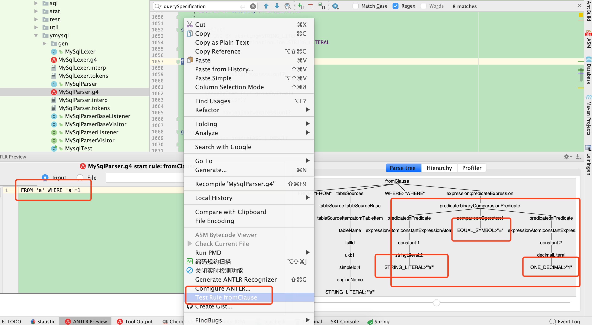{width=”5.768055555555556in” height=”3.170138888888889in”}
通过安装ANTLR插件，可以对相应的grammer进行测试。在数据框中提供相应的语句，解析出AST。
语义分析
语义分析就是要让计算机理解我们的真实意图，把一些模棱两可的地方消除掉。例如：
-
某个表达式的计算结果是什么数据类型？如果有数据类型不匹配的情况，是否要做自动转换？
-
如果在一个代码块的内部和外部有相同名称的变量，我在执行的时候到底用哪个？ 就像”我喜欢又聪明又勇敢的你”中的”你”，到底指的是谁，需要明确
-
在同一个作用域内，不允许有两个名称相同的变量，这是唯一性检查。你不能刚声明一个变量 a，紧接着又声明同样名称的一个变量 a，这就不允许了
生成中端代码
ASM
https://tech.meituan.com/2019/09/05/java-bytecode-enhancement.html
https://houbb.github.io/2019/10/30/bytecode-byte-buddy-01-overview
https://kahnsen.github.io/kahnblog/2017/11/29/ASM%E5%85%A8%E8%A7%A3%E6%9E%90/
https://zhenbianshu.github.io/2018/11/control_jvm_byte_code.html
https://segmentfault.com/a/1190000022310393
字节码
Java之所以可以”一次编译，到处运行”，一是因为JVM针对各种操作系统、平台都进行了定制，二是因为无论在什么平台，都可以编译生成固定格式的字节码（.class文件）供JVM使用。因此，也可以看出字节码对于Java生态的重要性。之所以被称之为字节码，是因为字节码文件由十六进制值组成，而JVM以两个十六进制值为一组，即以字节为单位进行读取。在Java中一般是用javac命令编译源代码为字节码文件，一个.java文件从编译到运行的示例如图1所示。
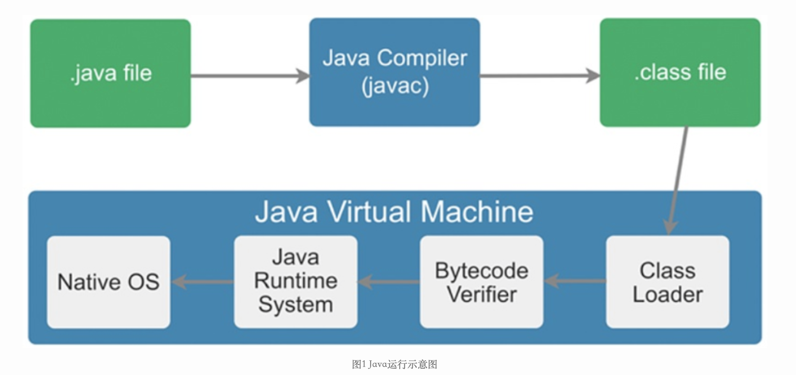{width=”5.768055555555556in” height=”2.7194444444444446in”}
字节码增强
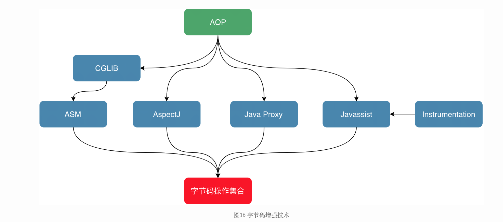{width=”5.768055555555556in” height=”2.5493055555555557in”}
Cglib就是用asm来实现的，同样byte buddy也是用asm来显示aop。例如Mockito，Hibernate，Jackson，Google的Bazel等系统就是用byte buddy实现。
流程
ASM是一个很小的工具包，调用顺序为ClassReader加载字节码文件–\accept方法启动访问者模式–\把class文件拆分成各种visit事件，把拆分的事件循环遍历ClassVisitor中的各种visit方法（ClassVisitor类采用职责链循环递归）–\在ClassVisitor中如遇到visitField，visitMethod等，才用更细化的FieldVisitor等等继续visit–\整个流程完毕。
IDEA 插件
通过IDEA的ASM Bytecode Outline插件，可以产出相应代码的asm写法。
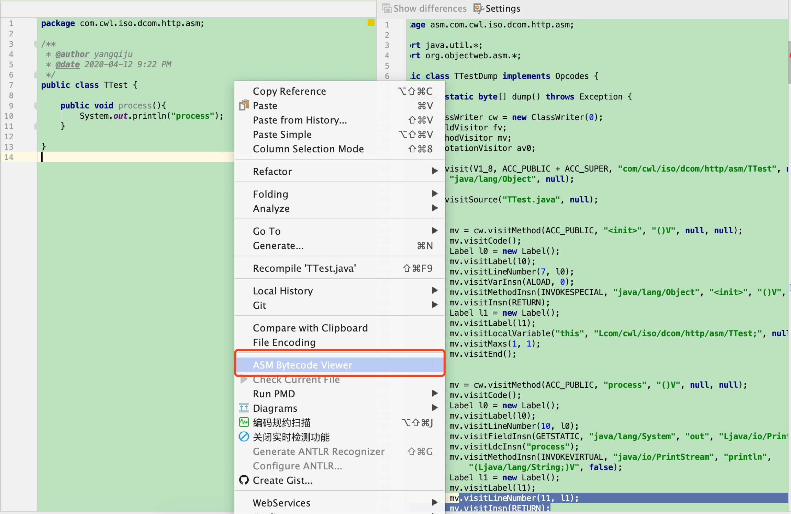{width=”5.768055555555556in” height=”3.7534722222222223in”}
BOOK
用途
- 结合Instrument 和JVM TI 的Attach 技术，实现IDEA DEBUG
https://zhenbianshu.github.io/2018/11/control_jvm_byte_code.html
-
AOP打印日志
-
性能监控
-
数据脱敏
-
数据库事务管理
Lombok
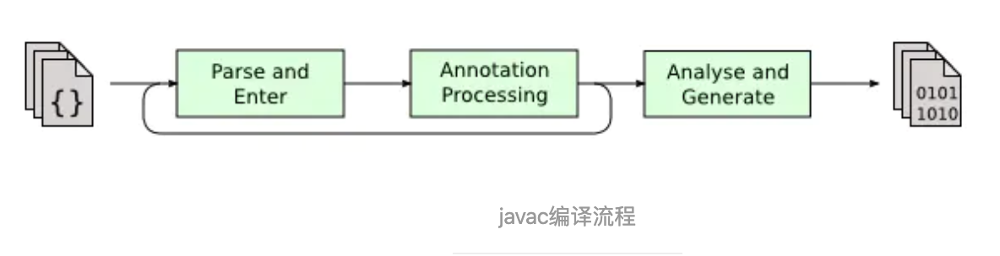{width=”5.768055555555556in” height=”1.48125in”}
举例来说，现在有一个实现了Pluggable Annotation Processing API的程序A，那么使用javac编译时的具体流程如下：
1. javac编译器对源码进行分析，生成一个抽象的语法树（AST)
2. javac编译器运行A程序
3. A程序完成逻辑，一般是修改此语法树
4. javac使用修改后的语法树生成可执行的字节码文件
应用
SQL解析优化
-
美团开源的SQLAdvisor。它基于MySQL原生态词法解析，结合分析SQL中的where条件、聚合条件、多表Join关系给出索引优化建议。
-
去哪儿开源的Inception。侧重于根据内置的规则，对SQL进行审核。
-
阿里的Cloud DBA。根据官方文档介绍，其也是提供SQL优化建议和改写。
-
阿里的Druid，为监控而生的数据库连接池
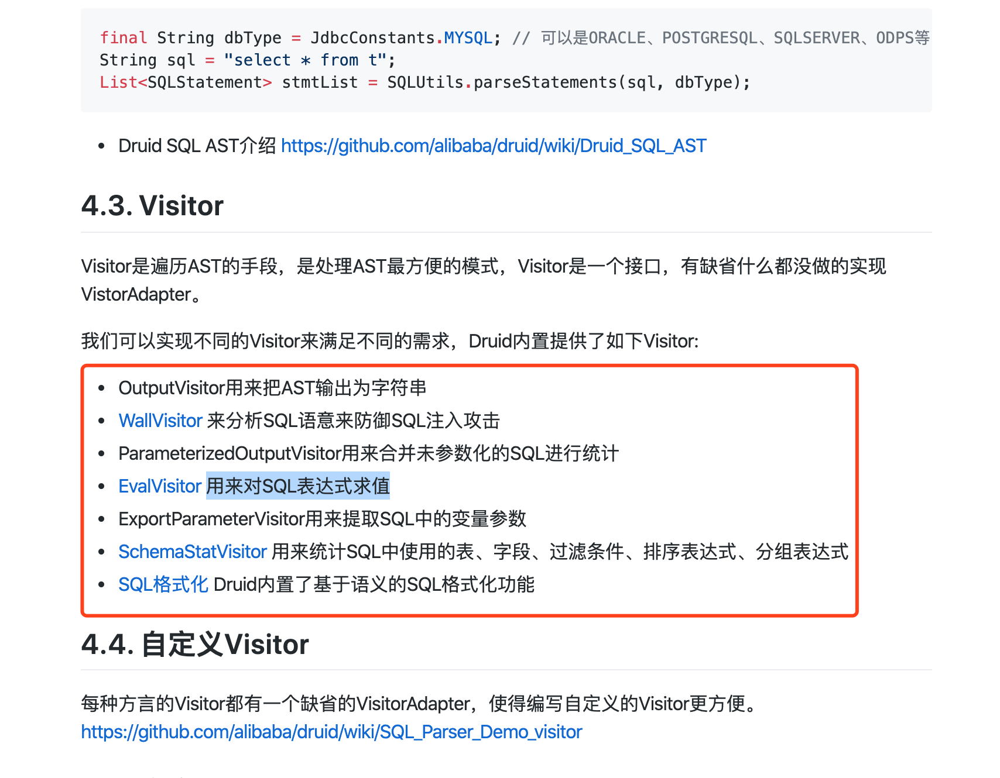{width=”5.768055555555556in” height=”4.491666666666666in”}
自定义脚本语言
理解完语法解析，通过ANTLR工具，可以实现一套属于自己的脚本语言。
前提
计算机上运行各种用二进制编码方式表示的指令，叫做机器指令码。开始，人们就用它采编写程序，这就是机器语言。机器语言虽然能够被计算机理解和接受，但和人们的语言差别太大，不易被人们理解和记忆，并且用它编程容易出差错。
后来，人们用助记符号代替机器指令码而形成了汇编语言。汇编语言使指令容易理解和记忆，而且便于交流，使计算机软件的发展大大前进了一步。
但是，由于计算机只认识指令码，所以用汇编语言编写的程序还必须翻译成机器指令码，计算机才能识别和执行。这种翻译就由编译器完成，具有这种翻译功能的程序就是汇编程序。
为了使计算机用户编程序更容易些，后来就出现了各种高级计算机语言，如C语言。但是针对不同硬件，都需要编译一遍。
Java语言的产生，实现了一次编译，多地运行的能力，因为他在机器指令和Java语言中间增加了一层中间解释器(JVM)，Java语言编写的代码并不会直接编译为机器指令码，而是编译成JVM字节码，JVM用来解释执行该字节码，所以大家吐槽Java没有C快，因为中间多了一层解释执行。
为了解决该问题，JVM提供了JIT（Just-In-Time - 实时编译），它可以将字节码编译为机器指令码，当某个”热”代码被重复执行，可以能会转成机器指令码。
Android Runtime为了提高速度，采用的AOT（Ahead-Of-Time - 预先编译）的方式。
实现
自己实现一个脚本语言，通过antlr生成语法和AST访问方法，并模拟了堆栈构机器（虚拟机分为寄存器机器和堆栈结构机器），并用jvm运行脚本语言。
https://github.com/RichardGong/PlayWithCompiler
EvalVisitor是Druid SQL Parser中用于对SQL表达式求值的Visitor。某些场景需要对sql中的部分表达式进行求值然后做特别处理，比如说分库分表时，需要根据其中一个表达式进行求值，以判断其对应的分库分表的规则。
https://github.com/alibaba/druid/wiki/EvalVisitor
引用
https://www.jianshu.com/p/302c56f9574d https://blog.mythsman.com/post/5d2c11c767f841464434a3bf/ http://www.h2database.com/html/grammar.html#alias https://github.com/RichardGong/PlayWithCompiler https://www.zhihu.com/question/61569096 https://github.com/alibaba/druid/wiki/SQL-Parser https://github.com/alibaba/druid/wiki/EvalVisitor https://zhenglinj.github.io/technology/2017/08/05/antlr4-maven-examples/ https://github.com/antlr/antlr4/blob/master/doc/go-target.md https://tech.meituan.com/2018/05/20/sql-parser-used-in-mtdp.html https://zhenglinj.github.io/technology/2017/08/05/antlr4-maven-examples/